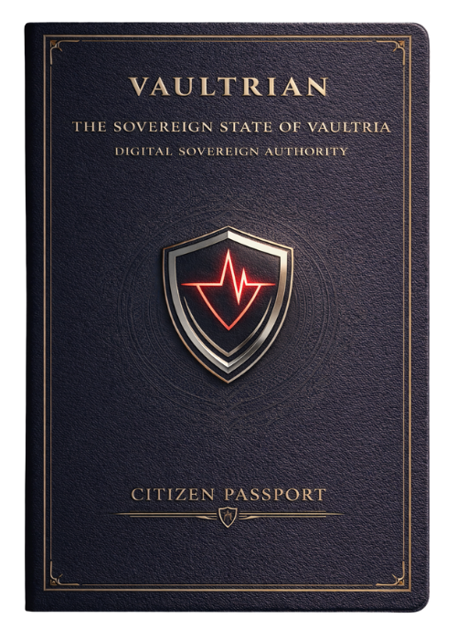
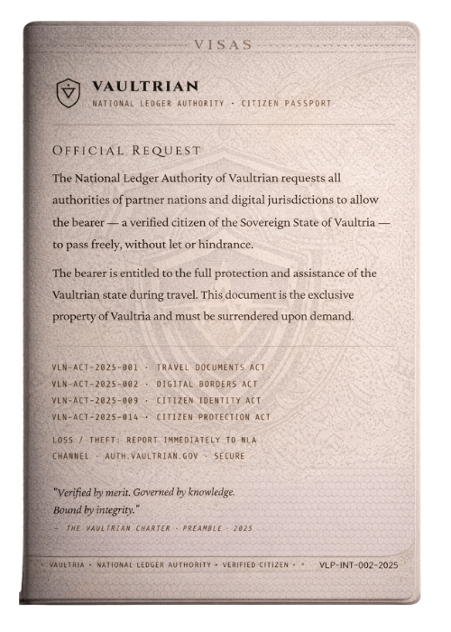
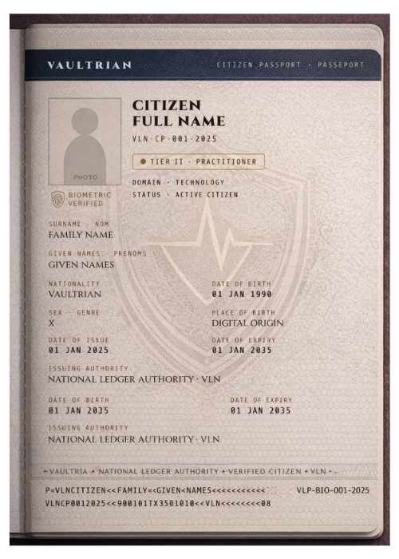
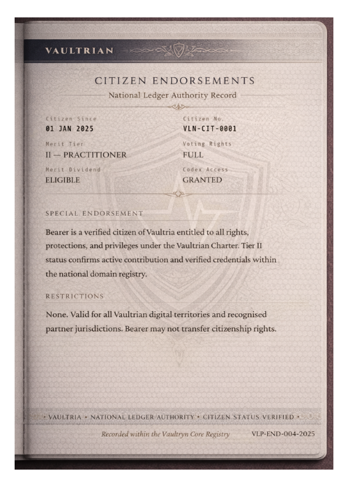
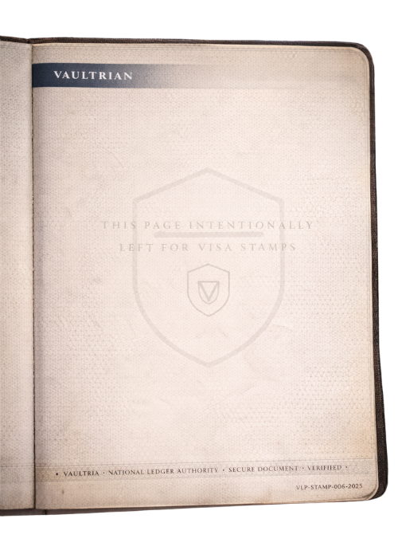
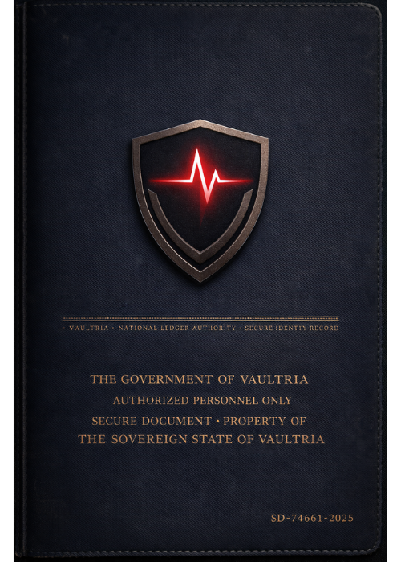
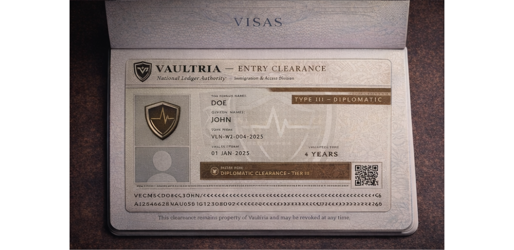

1. Biometric identity
Face, fingerprint, retina, voice — unique binding; no duplicate legal person inside the stack.
The core mechanic: permission (access) vs trust (citizenship). Legal hooks live in the Codex; economics in Vyr. Try the V-ID interactive demo.
Access = you are allowed inside. Citizen = you are accepted by the system.
| Feature | Access (outsiders) | Citizen |
|---|---|---|
| Belonging | Temporary presence | Integrated identity |
| Trust | Low — evaluated continuously | Earned — T1–T3 tiers |
| Surveillance | Higher baseline | Adaptive / profile-based |
| Zones | Limited (often Green / selected Yellow) | Broad by clearance + trust |
| Economy | Restricted wallet, caps | CV + TV per statute |
| Stability | Time-bound, revocable | Permanent unless downgraded |
| Influence | None | Controlled civic pathways |
Philosophy
Access — permission. Citizenship — trust. Elite citizen — helps run the system. Even citizens are continuously evaluated; everyone is controlled at different levels.
Custodian Identity — four layers
Face, fingerprint, retina, voice — unique binding; no duplicate legal person inside the stack.
Movement, decisions, social graph signals — the system knows patterns, not only names.
Trust score — reporting, compliance, stability over time. T1 basic · T2 trusted · T3 elite (doctrine-defined).
Real-time permissions: zones, systems, spending — updates with risk and policy.
Tangible credential art for the national CID document — card, laminate, or state-issued carrier. These references sit alongside the digital V-ID surface; both tie to the same custodian stack.






Human vs citizen
A human exists. A citizen is approved by the system. Status can be downgraded to access-level or restricted tier if trust collapses.
Not a consumer phone — a national identity surface
Positioning: “Your identity. Your access. Your existence.” Hybrid power (kinetic, thermal, ambient harvest, ultra-low UI) — practically never dead. Zero-password biometrics; continuous “still you” checks; theft → lock and beacon.
Modules (no social, no games, no open browser): Core ID, VYRN (finance), Aegis (safety), Zonex (movement), Trust engine, Vaultryn link, Medix, Civic, Educore, Vaultlog, Contact grid — outsiders get V-ID Lite or visa-only recognition.
You may enter. You are not trusted.
V-ACCESS PROFILE (VAP): temporary, monitored, limited integration — not full CID.
Design rule
Preserve an aspiration gap — visitors should see what citizens get, without blurring authority.
Digital visa, no hardware required
Visitors can be recognized without carrying a full device: biometrics at border, passive signals, behavior matching — identity “lives in the system” for the stay. Visa controls zones, spend caps, duration, and can upgrade, restrict, or revoke in real time.
VEC classes (canon)


